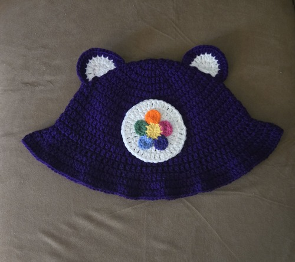
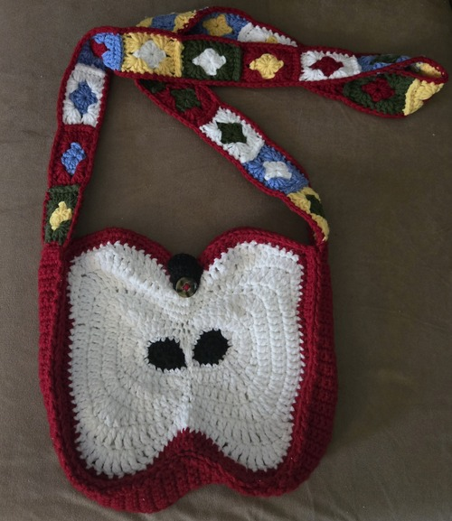
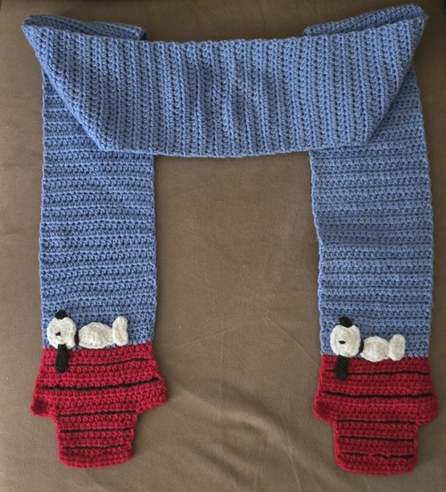
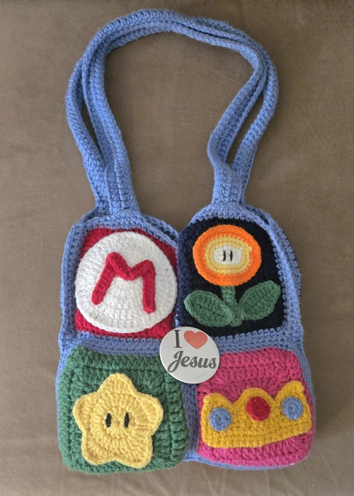
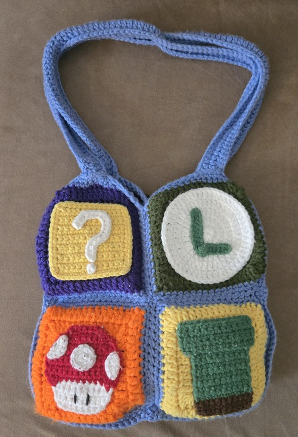

Crocheted Chatter
Personal Projects
These are some crochet items that I have made! I have about a year and a half of experience.
Care Bear Hat

Apple Core Bag

Snoopy Scarf

Mario Themed Bag (Side 1)

Mario Themed Bag (Side 2)
